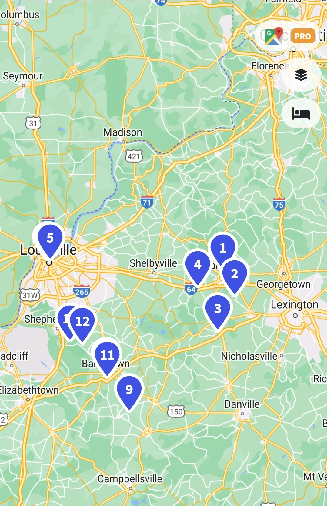

Distillery Options
| Distillery | Grouping | Location | Visit options | Price |
|---|---|---|---|---|
| Buffalo Trace | A | Frankfort | Tour (75min) Hard Hat (75min 11:30/12:30) Old Taylor (75min 10/2) |
Free Free Free |
| Woodford Reserve | A | Frankfort/Lexington | Tour (70min) Tasting (30min) Elevated (70min sat. 11pm) Mixology (45min) |
$32 $25 $125 $40 |
| Four Roses Distillery | A | West Lexington | Tour (75min) Tasting (30min) Elevated tasting (70min fri. 2pm) |
$22 $16 $45 |
| Wild Turkey | A | West Lexington | Cash Bar | $ |
| Three Boys Farm | A | West Frankfort | Thieving tour (45min) | $35 |
| Old Forester | B | Louisville | Tour (75min) Elevated Tour (75min, fri/sat 12:30/1:30) |
$35 $70 |
Evan Williams | B | Louisville | Tour (60min) Speakeasy tasting (45min) Bartender experience(45min) |
$18 $25 $35 |
Michters | B | Louisville | Tour (60min) Elevated tour (90min fri 12pm) Super tour (120min ??) |
$20 $50 $100 |
Peerless | B | Louisville | Tour (75min) Tasting (45min) Elevated tour (?? thur 1pm, 8 people) |
$28 $18 $75 |
| Makers Mark | C | South Bardstown | Tour (75min) Elevated tour (120min mon-fri 10am) |
$22 $55 |
Heaven Hill | C | Bardstown | Tasting (45min) Elevated tasting (45min) Elevated tour (75min) Warehouse tour (90min) |
$18 $25 $40 $35 |
Willet | C | Bardstown | Tasting (30min) tour (60min) |
$18 $25 |
Four Roses Bottling | C | North Bardstown | Tasting (45min) tour (90min) |
$16 $22 |
Jim Beam | C | North Bardstown | Tasting (20min) tour (90min) Elevated tasting (45min) Elevated tasting 2 (60min) |
$20 $28 $75 $125 |
Bardstown Bourbon Company | C | Bardstown | Tasting (60min) Tour (60min) Blending class (60min) Blind tasting (60min) Elevated tour (210min) |
$30 $15 $55 $55 $50 |

Buffalo Trace
Buffalo trace (BT) has a few different tour options that are all free although some
are harder to get reservations for. BT sells a lot of coveted products like
(EH Taylor, Blantons, Eagle Rare, Weller SR), but they only sell one of those
each day, you can only buy one of each per 3 months, they and sell out fairly
early in the morning. We could tour one day and swing through another morning (9:30am)
to get a different bottle. I would recommend the Old Taylor or Hard Hat tours
if we can get them.
| Bottle | Pre-tax price | # allowed | Estimated likelihood? | Buffalo Trace | ~$25.99 | one per day | 100% | Sazerac Rye | ~$25.99 | one per day | 100% | Blantons | ~$59.99 | one per 90 days | 30% | Weller Special Reserve | ~$25.99 | one per 90 days | 27% | E.H. Taylor | ~$43.99 | one per 90 days | 27% | Eagle Rare | ~$39.99 | one per 90 days | 16% |
|---|

Woodford Reserve
Woodford reserve is a pretty well known brand, although they don't have a full range
of products like buffalo trace or old forester. The tour is supposed to be pretty
good according to reddit based on the very modern and refined distillery. The tasting
might have one special bottle and depending on the time of year they may have their
master distiller series in the giftshop. Overall this tour is more on the distillery
than the whiskey.
| Bottle | Pre-tax price | # allowed | Estimated likelihood? | Master Collection | ~$129.99 | one | <5% | Batch Proof | ~$129.99 | one | <5% |
|---|

Four Roses Distillery
Four roses has two locations, one where they distill (here) and one where they
store and bottle (near Jim beam). The tour is supposed to be ok and the tasting is
their readily available stuff (small batch, single barrel, small batch select).
The big thing is that they regularly (almost 50% of days) release their barrel strength
bottles in one of the gift shops and have those for sale for a few hours. These tend
to be some of the most highly rated bottles at their price (~$85). Outside of Buffalo
trace and heaven hill, four roses is the most likely to get an "allocated" bottle.
| Bottle | Pre-tax price | # allowed | Estimated likelihood? | Single Barrel | ~$40 | unlimited | 100% | Small Batch Select | ~$55 | unlimited | 100% | Barrel Proof (10 different recipes) | ~$85 | one per day | 25% | Limited Edition | ~$179.99 | one | <5% |
|---|

Wild Turkey
Wild turkey (WT) is a hard one that may require us to make a later decision on. For
the last couple years they have been doing rennovations, so that there are no tours
and even their usual gift shop is closed with a pop-up bar/gift shop across the street.
When they were running this was a favorite tour because one of the master distillers often
met with the group, talked about all the details of WT and signed bottles/clothes.
If we want to swing through for an old fashioned, or try our luck for a rare bottle we can,
but they haven't announced when the tours will be open again. That being said,
they have good whiskey and Eric really enjoys them, so might be worth seeing
if we can get the master distiller to sign something!
| Bottle | Pre-tax price | # allowed | Estimated likelihood? | Rare Breed | ~$50 | unlimited | 100% | Kentucky Spirit | ~$60 | unlimited | 100% | 12 year | ~$200.99 | one | <5% | Father and Son | ~$80.99 | one | <1% | Masters Keep | ~$149.99 | one | <10% |
|---|

Three Boys Farm
Three boys farm (also branded Whiskey Thief) is one of the small-time distilleries that everyone recommends
visiting in the area. They work with some other brands but most of their stuff is
single barrel, custom stuff. Their tour is supposed to be excellent with (5)
tastings right from the barrel, and you can buy your own bottle right from the barrels
tasted. Great if you want to support a small time distillery or try whiskey right
from the barrel.
| Bottle | Pre-tax price | # allowed | Estimated likelihood? | Unknown | ~$80 | one | 100% |
|---|

Old Forester
Old forester (OF) is the first from group B that is located in downtown Louisville.
This group has the benefit that everything is walkable and many of the elevated
tours give you highly desirable tastings. Old forester is supposedly a great tour
with a rich history and good tasting options. They randomly (10% of the time) have
their single barrels available for sale. Their elevated tour is expensive at $70,
but it includes tasting a single barrel and their birthday bourbon, which is one of
the most desirable bourbons on the market (and beats pappy in tastings). The elevated
tour is available most fridays and saturdays at 12:30 or 1:30pm, but sells out fast.
| Bottle | Pre-tax price | # allowed | Estimated likelihood? | Single Barrel | ~$59.99 | one | <10% | Single Barrel Barrel Proof | ~$79.99 | one | <10% | OF 117 (375ml) | ~$49.99 | one | <10% | King Ranch | ~$59.99 | one | <1% | Presidents Choice | ~$179.99 | one | <1% | Birthday Bourbon | ~$149.99 | one | 0% |
|---|

Evan Williams
Evan williams is a change-up from most distilleries because Evan Williams is (mostly)
the budget brand for Heaven Hill. The way EW differentiates itself from other distilleries
is they have a speakeasy tour, which is essentially a tour through drinks with the bartender
giving you the history through tasting. Many people recommend this as a way to
break up the distillery tours that can become somewhat repetitive. They also sometimes
have evan williams 12 year and 23 year but may require chatting up the
bartender/gift shop people.
| Bottle | Pre-tax price | # allowed | Estimated likelihood? | 12 year | ~$139.99 | one | 15% | 23 year | ~$349.99 | one | <5% |
|---|

Michters
Michters is another distillery right on this stretch of road and has become a premier
distillery. They have three tiers of tours, although only the basic and elevated
will likely work for our group. The elevated offers a substantially better tasting,
with (7) different drinks including three very high end samples. They will sometimes
have high-end bottles for sale, but it seems to be more luck than anything else, and
the price of their high end bottles starts high ($150+).
| Bottle | Pre-tax price | # allowed | Estimated likelihood? | Sour Mash | ~$45.99 | ? | 75% | 10 year | ~$179.99 | one | 15% | Toasted Barrel | ~$64.99 | one | 10% | Barrel Strength Bourbon | ~$64.99 | one | <5% | 20 year | ~$1200 | one | 0% |
|---|

Peerless
Peerless is another less well-known distillery on the list. They have grown quickly
in the last year, although one thing holding them back is they don't really sell
anything under $60 and their branding is a bit low-tier. That being said, people rave
about their tour and their elevated tour, while expensive ($75), includes up to 10 samples
of anything they make. Their basic tour also gets great reviews and is right next to
the others in group B.
| Bottle | Pre-tax price | # allowed | Estimated likelihood? | Single Barrel | ~$89.99 | ? | 100% | Double Oak | ~$89.99 | ? | 50% | Rum/Absinthe finished | ~$134.99 | one | ? | Distillery select | ~$124.99 | one | ? |
|---|

Makers Mark
Makers mark is the first of the Bardstown group (c), and is reported to have a beautiful
grounds for touring. Its a little out of the way compared to other places around Bardstown but well liked.
Their elevated tours don't seem to be worth it, but you can often
find their better bottles in the gift shop ($~60-80).
| Bottle | Pre-tax price | # allowed | Estimated likelihood? | Private Barrel | ~$69.99 | one | 100% | Limited Edition series | ~$69.99 | ? | 50% |
|---|

Heaven Hill
Heaven hill is a top brand when it comes to whiskey, with good bottles at every price point.
Their brands include Larceny, Elijah Craig, Henry Mckenna, and more that give them a wide range.
They are also one of the best tours, with the elevated "You do bourbon" tour including
a great tasting and the opportunity to buy a bottle of any of the tasting samples which
often includes a custom bottle or Larceny/Elijah Craig right from the barrel. I would
highly recommend we do this one.
| Bottle | Pre-tax price | # allowed | Estimated likelihood? | Elijah Craig Barrel Proof | ~$70.99 | ? | 75% | Elijah Craig Toasted | ~$59.99 | ? | 50% | Larceny Barrel Proof | ~$59.99 | ? | 50% | Bernheim Wheat Barrel Proof | ~$69.99 | ? | 75% | Heaven Hill 14 year | ~$199.99 | one | 10% | Parker Heritage | ~$124.99 | one | 10% | Old Fitzgerald 9-19 year | ~$89.99-$250 | one | ? |
|---|

Willet
Willet is just a mile or two from Heaven Hill and is a great compliment, with primarily Rye
whiskey as their offering. The tour is good, you have a chance at some of their allocated
products like they purple top bottles, and they take reservations for their restuarant. The
restuarant is considered the best food of all the distilleries so if we are in the area,
we should try to get lunch here!
| Bottle | Pre-tax price | # allowed | Estimated likelihood? | Pot Still | ~$49.99 | unlimited | 100% | Purple top | ~$249.99 | one | <1% |
|---|

Four Roses Bottling
This is the second four roses location where they do the warehousing and bottling. I haven't
heard too much about the tours but we again have a shot at getting a premium bottle at this location.
Tasting is exactly the same but obviously the tour focuses on what happens after
the whiskey is barreled.
| Bottle | Pre-tax price | # allowed | Estimated likelihood? | Single Barrel | ~$40 | unlimited | 100% | Small Batch Select | ~$55 | unlimited | 100% | Barrel Proof (10 different recipes) | ~$85 | one per day | 25% | Limited Edition | ~$179.99 | one | <5% |
|---|

Jim Beam
Jim beam is often known for their name brand, but they are also the distillery for
Knob Creek and bookers. They have a few tour and tasting options and the opportunity
to bottle your own Knob Creek 9 year old for $60.
Places special bottles throughout the store including KC12, KC15, KC18, and bookers. Seems
somewhat more available than other distilleries.
| Bottle | Pre-tax price | # allowed | Estimated likelihood? | Knob Creek 9 BP | ~$54.99 | unlimited | 100% | Bakers 7 | ~$54.99 | ? | 75% | Knob Creek 12 | ~$69.99 | one | 15% | Knob Creek 12 BP | ~$94.99 | one | <5% | Knob Creek 15 | ~$104.99 | one | <5% | Knob Creek 18 | ~$159.99 | one | 10% | Bookers | ~$89.99 | one | 20% | Little Book | ~$124.99 | one | 10% |
|---|

Bardstown Bourbon Company
Bardstown Bourbon Company (BBC) is a newer brand that has made a name for itself by
blending together barrel strength bourbons with different ages, mashbills, and finishes.
They tend to be a pricier brand, althoug the BBC Origin is generally affordable at ~$50.
Lately they have gotten a number of good reviews although some people don't like that
they don't put an age statement on their bottles due to mixing things like a 5yr, 7yr, and 12yr together.
They have many tour options and I honestly don't know what they will have for bottles,
but the tasting option gets good reviews and they have one of the best distillery-restuarants
reportedly.
| Bottle | Pre-tax price | # allowed | Estimated likelihood? | Unknown |
|---|

Other
We can also go to another distillery if anyone would like to. I picked the main ones,
but others like Angel's envy or other small distilleries are options too. Send me a text
or something if there is another place you want me to look into and recommend for the group.